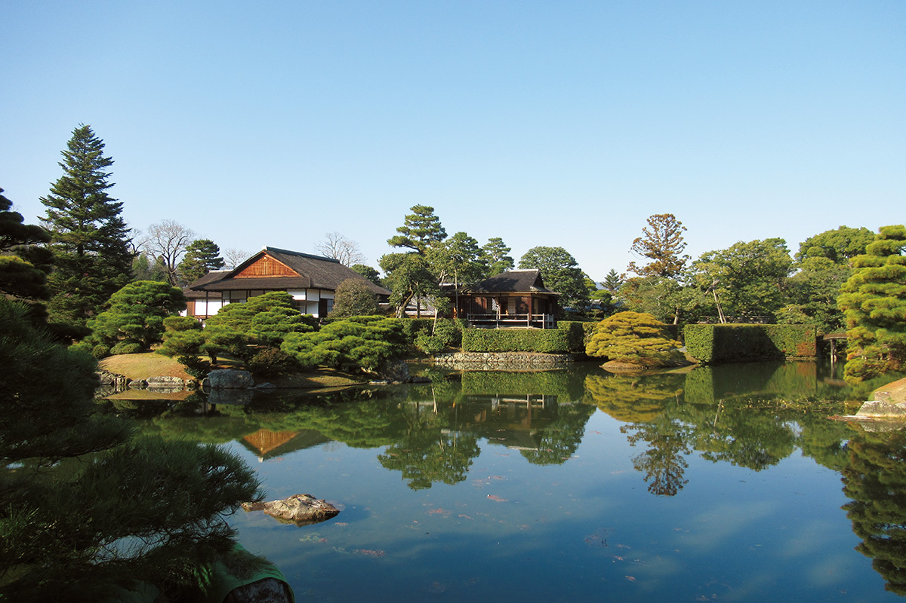
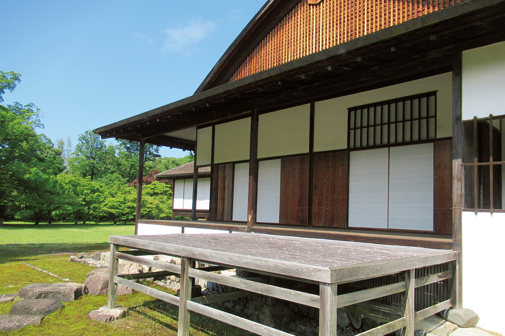
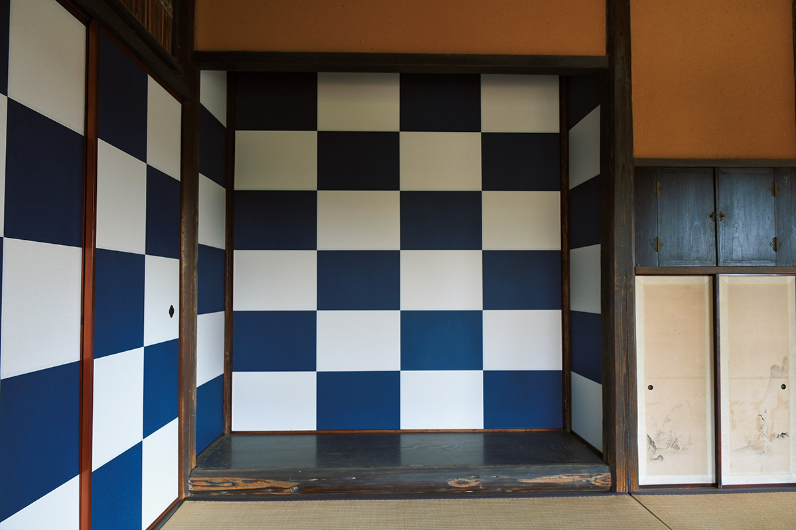
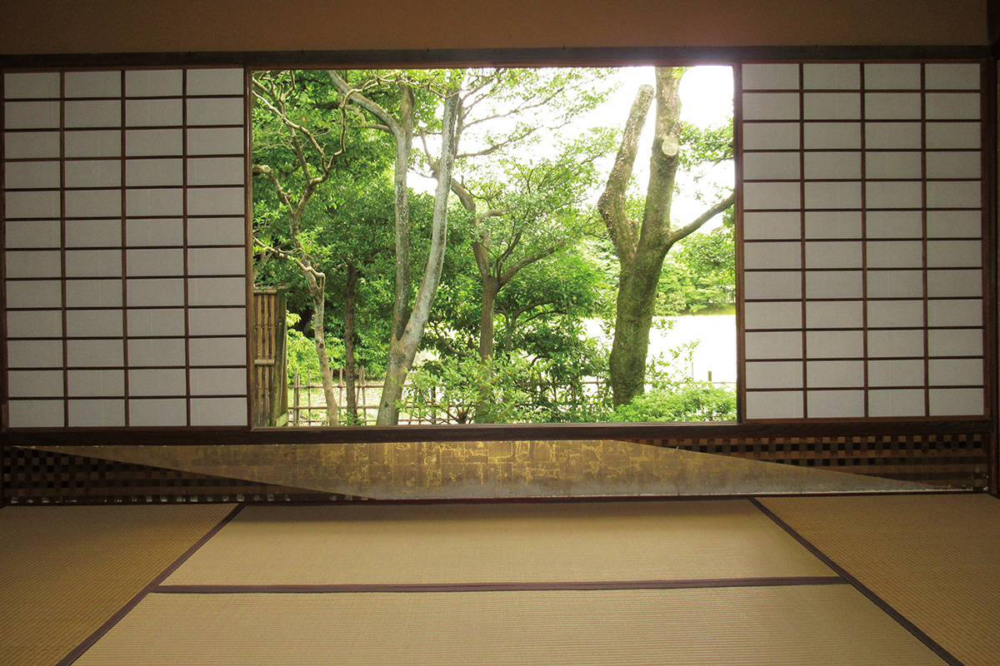
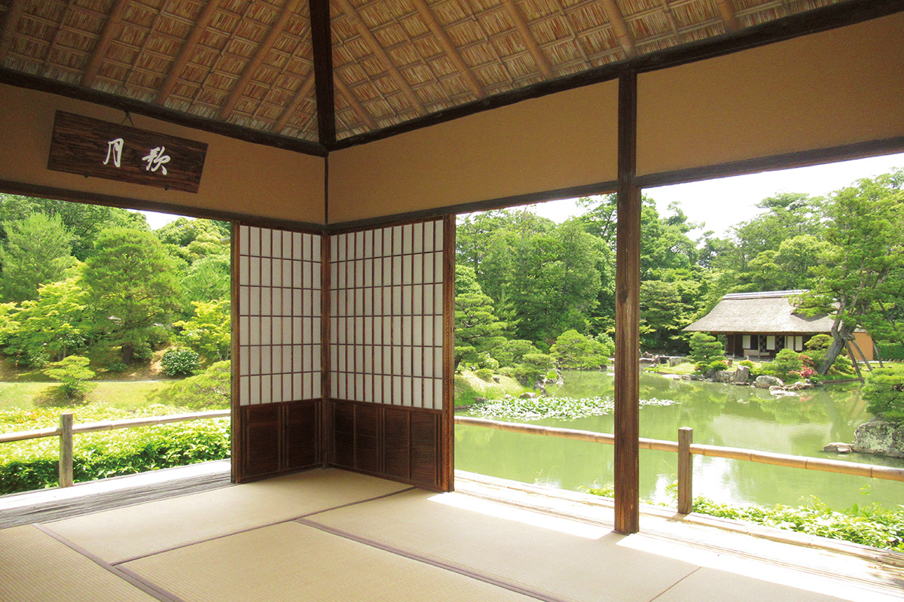

Префектура Киото · Киото · архитектура
Императорская вилла Кацура: павильоны для луны и дизайн, который не стареет

Императорскую виллу Кацура называют вершиной японской архитектуры и садового искусства. Её построили в эпоху Эдо, и попасть сюда можно только по записи, поэтому визит лучше планировать заранее, особенно осенью.
Основы
Сад для придворных забав
Осенью Киото полон туристов, и самые интересные места города лучше бронировать заранее: тогда смотреть их можно спокойно, без очередей и спешки. Одно из таких мест, без которого осенний Киото трудно представить, это императорская вилла Кацура.
Виллу построили в эпоху Эдо (1603–1868), когда страной правили сёгуны, а императорский двор оставался в Киото. Сегодня ею ведает Управление императорского двора, а саму виллу считают вершиной японской архитектуры и садового искусства. На огромной территории рассыпаны павильоны, чайные домики и уголки сада, и всё вместе похоже на парк развлечений для придворной знати: в нём собрано то, как члены императорской семьи понимали красоту и как проводили досуг.

Многое здесь связано с луной. Павильон Гэппа-ро и помост Цукимидай построили для того, чтобы любоваться луной из комнат и из сада. Место и прежде славилось как лучшее для любования луной, и уже это говорит о том, насколько важен был такой вечер для императорской семьи и придворных.
Дизайн
Смелость XVII века
Кроме луны, вилла знаменита своей архитектурой и отделкой. Ей несколько сотен лет, но она не выглядит старой. Здесь собран самый отточенный вкус своего времени, и эти решения до сих пор живут в японском дизайне как образец традиционного модерна. Всё лишнее убрано, и всё же то и дело попадаются смелые и неожиданные детали, так что смотреть не надоедает.


Луна
Павильон-лодка
Гэппа-ро, как и обещает его название, поставили ради любования луной. Если поднять глаза, видно, что балки под крышей собраны как днище лодки: сам павильон задуман как судно, и гостю кажется, что он смотрит на луну с воды. Особенно сюда тянет в полнолуние середины осени, когда японцы по традиции любуются луной.

На осмотр можно записаться и онлайн. Это хороший повод прикоснуться к самой сути японской культуры, которую столетиями хранил императорский двор.
Императорская вилла Кацура
- Адрес
- префектура Киото, Киото, район Нисикё, Кацура-Мисоно
- Телефон
- +81 75-211-1215 (Киотское отделение Управления императорского двора)
- Часы работы
- осмотр в 9:00, 10:00, 11:00, 12:00, 13:00, 14:00 и 15:00
- Выходные
- понедельник (если праздник, то следующий день), новогодние праздники
- Цены / Вход
- 1000 иен, школьникам до старших классов включительно бесплатно; по записи